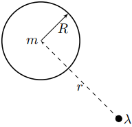
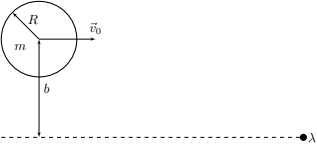
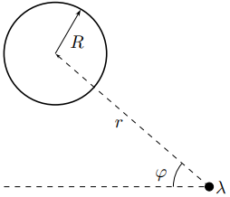
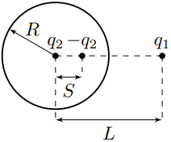
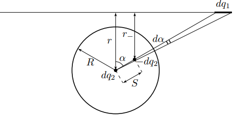
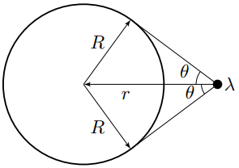

X23 (2023) — English translation
As part of this task, you will study the interaction of an uncharged metal homogeneous ball with an infinitely long thin stationary wire charged uniformly along its length. At all points of the problem, the radius $R$ and mass $m$ of the ball, as well as the linear charge density of the wire $\lambda$ are considered known. Parts $\mathrm{A}{,}\mathrm{B}$ and $\mathrm{C}$ are devoted to the study of the interaction of a ball and a wire at larger distances $r$ between them compared to $R$. Parts $\mathrm{D}$ and $\mathrm{E}$ are devoted to accurately describing their interactions.

In this part of the problem you have to obtain the dependences of the force $F$ and potential energy $W_p$ of the interaction between the ball and the wire. Note: At all points of parts $\mathrm{A}$ - $\mathrm{C}$, consider that the distance $r$ between the center of the ball and the wire is large compared to the radius $R$ of the ball.
Note: At all points of parts $\mathrm{A}$ - $\mathrm{C}$ consider that the distance $r$ between the center of the ball and the wire is large compared to the radius $R$ of the ball.
Let's solve the following auxiliary problems:
Let's move on to the interaction of the ball with the wire.
In the future, in all points of parts $\mathrm{B}$ and $\mathrm{C}$, use the expressions for the force and potential energy of interaction between the ball and the wire obtained in points $\mathrm{A4}$ and $\mathrm{A5}$, respectively. Note: You will only need the expression for the value $A$ in point $\bf{C4}$.
Note: You will only need the expression for the value $A$ in point $\bf{C4}$.
The ball flies in the direction “to the wire” from infinity with an initial speed $v_0$ and an impact parameter $b$.

In this part of the problem, you need to approximately obtain the conditions under which there will be no further contact between the ball and the wire.
When the initial speed $v_0$ of the ball is less than the critical value $v_{crit}$, the ball collides with the wire.
To describe the trajectory of the center of the ball, we introduce a polar coordinate system $(r,\varphi)$ with the origin on the wire axis. We will count the angle $\varphi$ from the direction to infinity.

We also use Binet's substitution: $$u=\cfrac{1}{r} $$ Обозначим $\cfrac{du}{d\varphi}$ за $u'$, а $\cfrac{dr}{dt}$ и $\cfrac{d\varphi}{dt}$ за $\dot{r}$ и $\dot{\varphi}$ respectively.
The equations obtained in the first three parts of the problem are not always applicable, but this problem can be solved exactly. The question of the trajectory will not be studied further, but the conditions for the absence of contact between the ball and the wire will be precisely obtained.
Let's solve the auxiliary problem again. Consider a point charge $q_1$ located at a distance $L$ from the center of an uncharged metal ball. As is known, this problem is solved by the image method: in the center of the ball and at a certain distance $S{<}R$ it is necessary to place charges $q_2$ and $-q_2$, respectively, ensuring a constant potential on the surface of the ball.

Note: You may need the following antiderivative: $$\int\cfrac{dx}{a^2+b^2x^2}=\cfrac{1}{ab}\arctan \left( \cfrac{bx}{a} \right) +C$$
$$\int\cfrac{dx}{a^2+b^2x^2}=\cfrac{1}{ab}\arctan \left( \cfrac{bx}{a} \right) +C$$
Let's move on to the interaction of the ball with the wire. The center of an uncharged metal ball of radius $R$ is at a distance $r$ from the wire.
Let us draw two lines from the center of the ball, constituting angles $\alpha$ and $\alpha+d\alpha$ with the direction “to the wire”. We denote the charge of the wire element in the area of intersection with the lines as $dq_1$, the charge-images of this element as $dq_2$ and $-dq_2$, and the distances from the charge $-dq_2$ to the center of the ball and to the wire as $S$ and $r_{-}$, respectively.

To describe the force and potential energy of interaction between the ball and the wire, it is convenient to introduce the angle $\theta$, defined as follows (see figure): $$\theta=\arcsin\left(\cfrac{R}{r}\right)=\arctan \left( \cfrac{R}{\sqrt{r^2-R^2}} \right) $$

An uncharged metal ball of radius $R$ and mass $m$ flies from infinity onto a wire with a speed $v_0$ and an impact parameter $b>R$. In this part of the problem, for different relations $b/R$ we will obtain restrictions on the speed $v_0$ at which the ball moves without contacting the wire. The minimum possible speed at which the ball moves without contact with the wire will be denoted by $v_{crit}$. Let us denote the parameter $\theta$ at the moment of maximum approach of the ball to the wire as $\theta_{max}$.
Source: https://pho.rs/p/2902